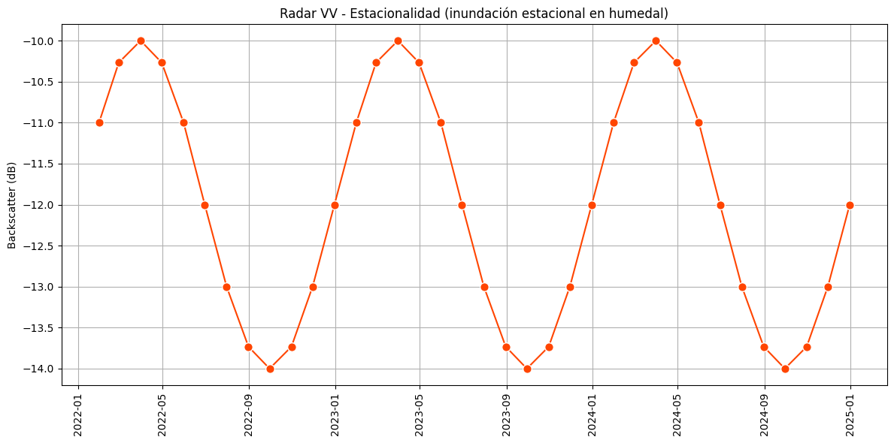

Series de tiempo#
c\traspaso\st_v
En el análisis de datos geoespaciales, las series de tiempo ocupan un lugar central. Ya sea que estudiemos fenómenos terrestres, marítimos o atmosféricos, observar cómo varían en el tiempo ciertas variables nos permite comprender procesos, detectar patrones y anticipar futuros escenarios.
Los científicos de datos trabajan con múltiples formas de representar la información, y una de las más poderosas en aplicaciones de inteligencia artificial aplicada al ambiente es, sin dudas, la serie temporal. Nos ayuda a responder preguntas como: ¿qué está cambiando? ¿cómo? ¿cuándo? y, sobre todo, ¿por qué?
Una serie de tiempo consiste en un conjunto de observaciones de una misma variable recogidas a intervalos regulares. Estos intervalos pueden ser diarios, semanales, mensuales, bimensuales, trimestrales, cuatrimestrales, incluso anuales o multianuales, dependiendo del fenómeno que estemos analizando. No es lo mismo estudiar un evento extremo como una inundación —que requiere una resolución diaria— que seguir el avance de la urbanización, que puede analizarse en escalas mensuales o anuales.
En este primer video vamos a trabajar con un ejemplo concreto y sencillo para introducirnos en el tema:
El caso es Bahía Blanca, donde analizamos la evolución mensual durante el año 2024 de una serie de indicadores ambientales derivados de imágenes satelitales Sentinel-2 y MODIS. Calculamos índices como NDVI, NDWI, NDBI, NDMI, NIR y temperatura superficial (LST) que permiten seguir la dinámica de la vegetación, la presencia de agua, el suelo desnudo, o el impacto del calor. A lo largo del ejemplo, mostramos cómo graficar estas variables, cómo generar las series de tiempo con Earth Engine, y cómo exportarlas para su posterior análisis en R o Python.
Ahora bien, para trabajar de forma sólida con series temporales es importante entender que detrás de cada gráfico hay múltiples componentes interactuando.

Por un lado, está la tendencia, ese comportamiento de largo plazo que puede marcar una dirección ascendente o descendente.
También encontramos ciclos, como los que impone el clima o la economía, que pueden repetirse con menor frecuencia pero tener gran impacto.
La estacionalidad, por su parte, nos habla de patrones que se repiten en el mismo periodo cada año: más verdor en primavera, más calor en verano.

Y, por supuesto, el ruido aleatorio, esas pequeñas fluctuaciones impredecibles que también forman parte de la realidad.

Antes de lanzarse a modelar o predecir, conviene detenerse en un análisis exploratorio. Visualizar la serie en un gráfico —con el tiempo en el eje horizontal y el valor en el eje vertical— ya ofrece una gran cantidad de información. A partir de ahí podemos detectar anomalías, rupturas, variaciones estacionales, o comportamientos inesperados.
Este análisis puede tener distintos niveles de profundidad. Uno descriptivo, que se limita a mostrar lo que ocurre. Otro explicativo, que busca entender por qué ocurre: por ejemplo, una caída brusca del NDWI puede relacionarse con una sequía o con una obra de canalización. Y también uno predictivo, que usa la historia registrada para anticipar lo que podría venir, como un riesgo ambiental o una oportunidad productiva.
Pero para que todo esto funcione, es fundamental tener algunos conceptos claros desde el inicio. Primero, es indispensable conocer el dominio del fenómeno que estamos estudiando: no podemos interpretar una serie de NDVI si no entendemos qué mide ese índice y cómo se comporta en distintos tipos de cobertura, como cultivos, bosques o zonas urbanas. También es clave tener un objetivo bien definido: ¿Queremos monitorear degradación ambiental? ¿Comparar campañas agrícolas? ¿Estudiar procesos de urbanización? Estas decisiones condicionan cómo configuramos nuestra serie: qué resolución temporal elegimos, a qué escala espacial trabajamos, qué variables o índices vamos a incorporar.
Este video tiene un enfoque introductorio. No busca dar una explicación exhaustiva de todos los componentes técnicos que intervienen en el análisis temporal, sino más bien motivar el uso de las series de tiempo como una herramienta clave en el análisis de información geoespacial con técnicas de inteligencia artificial. Por cuestiones de tiempo, no se abordan en profundidad aspectos como los fundamentos de los índices espectrales o los modelos de series temporales. Por eso, si te interesa avanzar, te recomendamos complementar este material con cursos específicos de teledetección y análisis de series de tiempo, que te brinden una base teórica y metodológica más sólida.
El preprocesamiento también juega un rol clave: a veces hay que rellenar valores faltantes, unificar series con distintas frecuencias, decidir qué hacer con valores extremos, y elegir con cuidado el horizonte temporal según lo que estemos estudiando.
Si el objetivo es predecir, entramos en un terreno más exigente: hay que dividir los datos en un período de entrenamiento y otro de validación, respetando el orden temporal para no introducir sesgos. Aquí aparecen dos grandes caminos: los modelos estadísticos clásicos, como ARIMA, que buscan capturar regularidades estructuradas, y los modelos basados en datos, como las redes neuronales LSTM, que pueden aprender directamente de la complejidad sin necesidad de hacer suposiciones rígidas.
Las series de tiempo son mucho más que líneas en un gráfico. Son herramientas vivas que nos permiten leer el pasado, entender el presente y proyectar el futuro. Aplicadas a la información geoespacial y a la inteligencia artificial, se convierten en aliadas estratégicas para estudiar el mundo cambiante que habitamos. Nos permiten transformar imágenes satelitales en narrativas dinámicas del territorio. Estas herramientas no solo sirven para entender el pasado o describir el presente, sino que son esenciales para anticipar y planificar un futuro más informado y sostenible.
Serie de Tiempo: Ejemplo Bahía Blanca#
En este laboratorio trabajamos con series temporales aplicadas a imágenes satelitales, tomando como área de estudio el partido de Bahía Blanca en la provincia de Buenos Aires, Argentina. El objetivo es generar indicadores ambientales mensuales o con otra frecuencia a partir de imágenes Sentinel-2 y MODIS, calcular valores promedio sobre una región de interés (ROI), visualizarlos como gráficos y opcionalmente exportar las estadísticas en formato CSV para análisis externos.
Definición de la frecuencia de análisis temporal#
var frecuencia = 'mensual';
Este parámetro define cada cuánto tiempo se va a tomar una imagen compuesta: puede ser mensual, bimestral, trimestral o cuatrimestral. Esto permite adaptar el análisis a diferentes necesidades: monitoreo fino o más general.
var mesesPorPaso = {
'mensual': 1,
'bimestral': 2,
'trimestral': 3,
'cuatrimestral': 4
};
var paso = mesesPorPaso[frecuencia];
A continuación se define cuántos meses tiene cada intervalo (paso) según la frecuencia elegida. Este valor será clave para generar las fechas y los períodos de análisis.
var fechas = ee.List.sequence(0, 11, paso).map(function(mes) {
return ee.Date('2024-01-01').advance(mes, 'month');
});
Se crea una lista de fechas iniciales, empezando el 1 de enero de 2024 y avanzando de paso en paso. Por ejemplo, si paso = 2, las fechas serán enero, marzo, mayo, etc.
Región de interés (ROI)#
var admin2 = ee.FeatureCollection("FAO/GAUL/2015/level2")
.filter(ee.Filter.eq('ADM0_NAME', 'Argentina'))
.filter(ee.Filter.eq('ADM1_NAME', 'Buenos Aires'));
var bahiaBlanca = admin2.filter(ee.Filter.eq('ADM2_NAME', 'Bahia Blanca'));
var roi2 = bahiaBlanca.geometry().simplify(100);
Se define la región de interés: el polígono de Bahía Blanca. Se simplifica la geometría para que sea más eficiente computacionalmente.
Map.centerObject(roi2, 8);
Map.addLayer(roi2, {color: 'red'}, 'Bahía Blanca');
Se centra el mapa en la región de estudio y se visualiza.
Función para agregar índices a cada imagen#
function agregarIndices(img) {
var ndvi = img.normalizedDifference(['B8', 'B4']).rename('NDVI');
var ndbi = img.normalizedDifference(['B11', 'B8']).rename('NDBI');
var ndwi = img.normalizedDifference(['B3', 'B8']).rename('NDWI');
var ndmi = img.normalizedDifference(['B3', 'B11']).rename('NDMI');
var nir = img.select('B8').divide(10000).rename('NIR');
return img.addBands([ndvi, ndbi, ndwi, ndmi, nir]);
}
Esta función calcula distintos índices espectrales (NDVI, NDBI, etc.) y agrega esos nuevos bandas derivadas a la imagen original. Esto facilita su análisis posterior.
Función clave: getColeccionPorPeriodo#
function getColeccionPorPeriodo(fecha) {
fecha = ee.Date(fecha);
var fin = fecha.advance(paso, 'month');
Recibe una fecha de inicio, y calcula la fecha de fin del periodo, avanzando paso meses.
var coleccion = ee.ImageCollection('COPERNICUS/S2_SR_HARMONIZED')
.filterBounds(roi2)
.filterDate(fecha, fin)
.filter(ee.Filter.lt('CLOUDY_PIXEL_PERCENTAGE', 20))
Filtra la colección Sentinel-2: • Solo imágenes dentro de la ROI. • Solo dentro del rango de fechas definido. • Solo imágenes con menos del 20% de nubes.
.map(function(img) {
return agregarIndices(img.clip(roi2).set('system:time_start', img.date().millis()));
});
A cada imagen del periodo: • Se la recorta a la ROI. • Se le calculan los índices. • Se le asigna el campo system:time_start para graficar luego.
return coleccion.mean().set('system:time_start', fecha.millis());
}
Devuelve una única imagen compuesta promedio de ese periodo, con fecha de inicio del bloque temporal.
Crear la colección temporal#
var final = ee.ImageCollection.fromImages(fechas.map(getColeccionPorPeriodo));
Aplica getColeccionPorPeriodo a cada fecha de inicio. El resultado es una serie de imágenes promedio por período, listas para graficar.
Gráfico de índices Sentinel-2#
var chart = ui.Chart.image.series({
imageCollection: final.select(['NDVI', 'NDBI', 'NDWI', 'NDMI', 'NIR']),
region: roi2,
reducer: ee.Reducer.mean(),
scale: 200,
xProperty: 'system:time_start'
})
Se crea una serie temporal multivariable, extrayendo el valor promedio de cada índice en la ROI para cada imagen compuesta.
.setChartType('LineChart')
.setOptions({
title: 'Serie temporal con índices Sentinel-2 y VV Sentinel-1',
hAxis: {title: 'Fecha'},
vAxis: {title: 'Valor promedio'},
lineWidth: 2,
pointSize: 4
});
Configuración estética del gráfico.
Serie temporal de temperatura superficial (LST)#
var modisLST = ee.ImageCollection("MODIS/061/MOD11A2")
.filterBounds(roi2)
.filterDate('2024-01-01', '2024-12-15')
.map(function(img) {
var lst = img.select('LST_Day_1km')
.multiply(0.02)
.subtract(273.15)
.rename('LST')
.clip(roi2);
return lst.copyProperties(img, img.propertyNames());
});
Se obtiene la temperatura superficial de MODIS, se convierte de Kelvin a °C y se recorta a la ROI.
var lstChart = ui.Chart.image.series({
imageCollection: modisLST,
region: roi2,
reducer: ee.Reducer.mean(),
scale: 1000,
xProperty: 'system:time_start'
})
Genera un gráfico de temperatura superficial promedio.
Exportación opcional de estadísticas a CSV#
a) Para Sentinel-2:
// var statsSentinel = imagenesPorPeriodo.map(function(img) {
Debe usarse la colección final en lugar de imagenesPorPeriodo:
var statsSentinel = final.map(function(img) {
var reducer = img.reduceRegion({
reducer: ee.Reducer.mean(),
geometry: roi2,
scale: 60,
maxPixels: 1e8
});
return ee.Feature(null, reducer).set('fecha', img.date().format('YYYY-MM-dd'));
});
Export.table.toDrive({
collection: statsSentinel,
description: 'sentinel_indices_roi',
fileFormat: 'CSV'
});
Esto exporta una tabla con una fila por período, conteniendo los valores promedio de NDVI, NDBI, etc.
b) Para MODIS LST:
var statsLST = modisLST.map(function(img) {
var reducer = img.reduceRegion({
reducer: ee.Reducer.mean(),
geometry: roi2,
scale: 1000,
maxPixels: 1e8
});
return ee.Feature(null, reducer).set('fecha', img.date().format('YYYY-MM-dd'));
});
Export.table.toDrive({
collection: statsLST,
description: 'serie_LST_BahiaBlanca',
fileFormat: 'CSV'
});
De forma similar, se genera una tabla con una fila por imagen de MODIS, con el valor de temperatura superficial promedio.
Conclusión#
Este script permite:
Analizar múltiples índices espectrales (vegetación, humedad, estructura urbana, etc.).
Ajustar la resolución temporal del análisis (mensual a cuatrimestral).
Visualizar tendencias y variaciones estacionales.
Exportar los datos para uso en informes, hojas de cálculo o análisis externos.
Este código puede adaptarse fácilmente a otras regiones o años cambiando el filtro de fechas o la geometría de interés.
—————————————————————#
En este video, vamos a explorar cómo construir y analizar series de tiempo aplicadas a información geoespacial usando Google Earth Engine. Lo haremos con un caso concreto: el municipio de Bahía Blanca, en la provincia de Buenos Aires, Argentina.
Nuestro objetivo es observar cómo varían en el tiempo ciertos indicadores ambientales, como la vegetación, el agua superficial, las áreas urbanas y la temperatura superficial terrestre. Para eso, trabajaremos con imágenes satelitales de Sentinel-2 y MODIS durante el año 2024.
Paso 1: Selección del área de estudio#
Comenzamos cargando los límites administrativos de segundo nivel (municipios) de Argentina a partir de la colección FAO/GAUL/2015/level2:
var admin2 = ee.FeatureCollection("FAO/GAUL/2015/level2")
.filter(ee.Filter.eq('ADM0_NAME', 'Argentina'))
.filter(ee.Filter.eq('ADM1_NAME', 'Buenos Aires'));
Luego, filtramos por el municipio de Bahía Blanca:
var bahiaBlanca = admin2.filter(ee.Filter.eq('ADM2_NAME', 'Bahía Blanca'));
var roi = bahiaBlanca.geometry();
Finalmente, centramos el mapa y dibujamos en rojo el ejido urbano:
Map.centerObject(roi, 10);
Map.addLayer(roi, {color: 'red'}, 'Ejido Bahía Blanca');
Esto define nuestra región de interés (ROI), el espacio geográfico sobre el cual extraeremos información temporal.
Paso 2: Definición temporal#
Comenzamos cargando los límites administrativos de Argentina y filtramos específicamente el municipio de Bahía Blanca. Esta región se convierte en nuestra región de interés (ROI). Luego la visualizamos en el mapa como una referencia para centrar el análisis.
Elegimos una frecuencia de análisis, en este caso trimestral:
var frecuencia = 'trimestral';
Luego definimos cuántos meses hay por paso:
var mesesPorPaso = {
'mensual': 1,
'bimestral': 2,
'trimestral': 3,
'cuatrimestral': 4
};
var paso = mesesPorPaso[frecuencia];
Y generamos las fechas de inicio de cada período:
var fechas = ee.List.sequence(0, 12, paso).map(function(mes) {
return ee.Date('2024-01-01').advance(mes, 'month');
});
Este bloque crea una lista de fechas trimestrales a partir de enero de 2024. Es la base temporal de nuestra serie.
Paso 3: Cálculo de índices espectrales#
A continuación, elegimos la frecuencia temporal con la que queremos analizar las imágenes. En este caso, optamos por una resolución trimestral, es decir, una imagen representativa cada tres meses. Esto nos permite construir una serie de tiempo que describe cómo cambian los valores promedio en Bahía Blanca a lo largo del año.
Desde la teoría de series de tiempo, esto significa que estamos generando una secuencia ordenada de observaciones espaciadas regularmente en el tiempo. Esta frecuencia define el tipo de variabilidad que podemos detectar: si quisiéramos observar cambios más rápidos, como eventos extremos puntuales, podríamos usar una frecuencia mensual o incluso semanal.
Definimos una función para agregar índices a cada imagen:
function agregarIndices(img) {
var ndvi = img.normalizedDifference(['B8', 'B4']).rename('NDVI');
var ndbi = img.normalizedDifference(['B11', 'B8']).rename('NDBI');
var ndwi = img.normalizedDifference(['B3', 'B8']).rename('NDWI');
var nir = img.select('B8').divide(10000).rename('NIR');
return img.addBands([ndvi, ndbi, ndwi, nir]);
}
Cada índice está basado en combinaciones de bandas de Sentinel-2. Por ejemplo, el NDVI se calcula como (B8 - B4) / (B8 + B4), y es una medida de vegetación. También escalamos la banda infrarroja cercana (B8) para mejorar su interpretación.
Paso 4: Construcción de la serie de tiempo#
Para cada imagen Sentinel-2 descargada, calculamos una serie de índices espectrales:
NDVI, para estimar la vegetación activa.
NDBI, que ayuda a detectar zonas urbanas.
NDWI, para observar cuerpos de agua.
Y una banda NIR (infrarrojo cercano) escalada, útil para varios análisis ambientales.
Estos índices son bandas sintéticas calculadas a partir de las bandas originales del satélite. Capturan comportamientos clave del territorio y nos permiten identificar patrones en la cobertura y el uso del suelo.
Definimos una función para obtener imágenes representativas de cada período:
function getColeccionPorPeriodo(fecha) {
fecha = ee.Date(fecha);
var fin = fecha.advance(paso, 'month');
var coleccion = ee.ImageCollection('COPERNICUS/S2_SR_HARMONIZED')
.filterBounds(roi2)
.filterDate(fecha, fin)
.filter(ee.Filter.lt('CLOUDY_PIXEL_PERCENTAGE', 20))
.map(function(img) {
return img.clip(roi2).set('system:time_start', img.date().millis());
})
.map(agregarIndices);
return coleccion.median().set('system:time_start', fecha.millis());
}
Este bloque toma las imágenes de Sentinel-2 de cada período, las filtra por nubes y región, les agrega los índices, y luego calcula la imagen mediana del trimestre, lo que reduce el ruido.
Generamos una colección de imágenes con:
var imagenesPorPeriodo = ee.ImageCollection.fromImages(
fechas.map(getColeccionPorPeriodo)
);
Esta colección contiene una imagen por trimestre, cada una con los cuatro índices calculados.
Paso 5: Gráfico de la serie temporal#
A partir de las imágenes filtradas, generamos un mosaico por cada período (cada trimestre), calculando el valor mediano para reducir el impacto de nubes o valores atípicos. Esto nos da una colección de imágenes representativas del año 2024.
Luego, mediante la herramienta ui.Chart.image.series, creamos una gráfica de series de tiempo para los valores promedio de cada índice en la región de Bahía Blanca. Esto nos permite observar visualmente la evolución temporal del NDVI, NDBI, NDWI y NIR a lo largo del año.
Utilizamos ui.Chart.image.series para graficar la evolución promedio de cada índice:
var chart = ui.Chart.image.series({
imageCollection: imagenesPorPeriodo.select(['NDVI', 'NDBI', 'NDWI', 'NIR']),
region: roi2,
reducer: ee.Reducer.mean(),
scale: 60,
xProperty: 'system:time_start'
})
.setChartType('LineChart')
.setOptions({
title: 'Series temporales - Índices Sentinel-2',
hAxis: {title: 'Fecha'},
vAxis: {title: 'Valor promedio'},
lineWidth: 2,
pointSize: 4
});
Esto produce una gráfica con 4 líneas, cada una representando el comportamiento de un índice a lo largo del año. Ideal para identificar estacionalidad, tendencias o eventos puntuales.
Paso 6: Incorporación de temperatura superficial (MODIS LST)#
Para enriquecer el análisis, incorporamos una serie de tiempo de temperatura superficial terrestre, derivada del sensor MODIS. Esta serie tiene una frecuencia quincenal, por lo que nos da una visión más detallada de cómo varía la temperatura en el municipio. Convertimos los valores de kelvin a grados Celsius y generamos otra gráfica de línea.
Este tipo de integración multifuente es clave en geoIA: nos permite combinar variables climáticas, biofísicas y antrópicas para descubrir relaciones complejas.
Agregamos una serie de tiempo térmica usando MODIS:
var modisLST = ee.ImageCollection("MODIS/061/MOD11A2")
.filterBounds(roi2)
.filterDate('2024-01-01', '2024-12-31')
.map(function(img) {
var lst = img.select('LST_Day_1km')
.multiply(0.02)
.subtract(273.15)
.rename('LST')
.clip(roi2);
return lst.copyProperties(img, img.propertyNames());
});
El valor original se convierte de Kelvin a grados Celsius. Luego graficamos su evolución:
var lstChart = ui.Chart.image.series({
imageCollection: modisLST,
region: roi2,
reducer: ee.Reducer.mean(),
scale: 1000,
xProperty: 'system:time_start'
})
.setChartType('LineChart')
.setOptions({
title: 'Serie temporal de Temperatura Superficial (LST)',
hAxis: {title: 'Fecha'},
vAxis: {title: '°C'},
lineWidth: 2,
pointSize: 4
});
Esto nos muestra cómo cambia la temperatura superficial en Bahía Blanca a lo largo del año, una variable clave para entender fenómenos como olas de calor o sequías.
Paso 7: Exportación de estadísticas#
Finalmente, exportamos los valores promedio de cada índice y de la temperatura para cada período a archivos CSV. Estos pueden ser usados en herramientas externas como R o Python para realizar análisis más avanzados: detección de estacionalidad, identificación de rupturas, modelado predictivo o entrenamiento de modelos de machine learning.
Exportamos los valores promedio de cada índice por período:
var statsSentinel = imagenesPorPeriodo.map(function(img) {
var reducer = img.reduceRegion({
reducer: ee.Reducer.mean(),
geometry: roi2,
scale: 60,
maxPixels: 1e8
});
return ee.Feature(null, reducer).set('fecha', img.date().format('YYYY-MM-dd'));
});
Export.table.toDrive({
collection: statsSentinel,
description: 'sentinel_indices_roi',
fileFormat: 'CSV'
});
Y hacemos lo mismo para la temperatura:
var statsLST = modisLST.map(function(img) {
var reducer = img.reduceRegion({
reducer: ee.Reducer.mean(),
geometry: roi2,
scale: 1000,
maxPixels: 1e8
});
return ee.Feature(null, reducer).set('fecha', img.date().format('YYYY-MM-dd'));
});
Export.table.toDrive({
collection: statsLST,
description: 'modis_lst_roi',
fileFormat: 'CSV'
});
Esto genera dos archivos CSV con los valores de cada índice y la temperatura, útiles para modelado o análisis con R, Python o Power BI.
Cierre: Reflexiones desde la teoría de series de tiempo#
Este ejemplo aplicado a Bahía Blanca nos muestra cómo transformar imágenes satelitales en datos estructurados para análisis temporal. En series de tiempo, lo importante no es solo observar lo que ocurre, sino entender cómo, cuándo y por qué ocurre.
Detectar tendencias, ciclos estacionales o anomalías nos permite anticipar problemas, diseñar intervenciones y monitorear el territorio de forma inteligente. Y cuando combinamos esto con inteligencia artificial, abrimos la puerta a predicciones automatizadas, segmentaciones espaciales dinámicas y sistemas de alerta temprana.
Las series de tiempo en geodatos no son solo gráficos, son narrativas del paisaje en movimiento.
Este primer ejemplo nos muestra cómo transformar imágenes satelitales en datos estructurados para análisis temporal, permitiendo entender fenómenos como crecimiento urbano, variaciones de vegetación o cambios de temperatura.
Las series de tiempo aplicadas a información geoespacial no solo nos ayudan a mirar el pasado, sino que nos brindan herramientas concretas para anticipar y planificar. En la siguiente parte, exploraremos ejemplos más avanzados, con datos multifuente y clasificación supervisada.
Sundo ejemplo#
En esta segunda parte del video, vamos a explorar cómo las series temporales pueden combinar múltiples fuentes de datos satelitales —ópticos, radar, térmicos y de precipitación— y cómo aplicar modelos de clasificación supervisada sobre secuencias de imágenes.
Veremos dos ejemplos complementarios:
Bahía Blanca, con una serie multifuente de Sentinel-2, Sentinel-1, MODIS y CHIRPS.
El conurbano de Rosario, donde usamos un modelo Random Forest para monitorear dinámicamente los cambios en el uso del suelo.
Ambos casos reflejan cómo las técnicas de geoIA pueden integrarse con análisis de series temporales para extraer valor del tiempo y del espacio.
🛰 Ejemplo 2 – Bahía Blanca: combinación multifuente (óptico, radar, térmico, lluvia) Aquí construimos una aplicación visual en Earth Engine que permite ver gráficos de serie de tiempo mensuales desde enero de 2024 hasta julio de 2025, con:
Índices ópticos: NDVI, NDWI, NDBI, NDMI, NIR
Radar: VV, VH, VV/VH
Temperatura superficial (MODIS LST)
Precipitación mensual (CHIRPS)
Todos los datos se combinan en una única interfaz visual interactiva. Esto permite monitorear fenómenos como estrés hídrico, cambios de cobertura, eventos extremos, y detectar posibles correlaciones entre lluvia, temperatura y respuesta de la vegetación.
Se incluye también la posibilidad de exportar los datos en CSV.
🛰 Ejemplo 3 – Rosario: clasificación de coberturas con Random Forest En este caso retomamos un clasificador Random Forest previamente entrenado, y lo aplicamos sobre una serie de imágenes bimestrales Sentinel-2 del año 2024.
Por cada período, se genera una imagen compuesta y se clasifica en cinco tipos de suelo: agua, urbano, cultivos, bosque y terreno desnudo.
Se cuenta la cantidad de píxeles por clase en cada período, y se genera:
Un gráfico de barras apiladas (valores absolutos)
Un gráfico de líneas con porcentajes (valores relativos)
Esto permite observar dinámicamente cómo cambia el uso del suelo mes a mes, detectar expansión urbana, retroceso de vegetación o ciclos agrícolas.
Ejemplo 2.#
🎥 Guion actualizado del video Ejemplo intermedio: Combinación multifuente para Bahía Blanca En este ejemplo intermedio, trabajamos con una serie de tiempo multifuente que combina datos ópticos del satélite Sentinel-2, radar de Sentinel-1, temperatura superficial de MODIS, y precipitación estimada por CHIRPS. El área de estudio es Bahía Blanca, en la provincia de Buenos Aires, y el período de análisis va de enero de 2024 a julio de 2025.
A diferencia de los ejemplos anteriores, este script no imprime resultados en la consola, sino que construye una aplicación visual en la misma interfaz de Earth Engine, donde los gráficos se muestran en un panel lateral interactivo. Esto permite que cualquier persona que ejecute el script pueda visualizar fácilmente los resultados, sin necesidad de revisar la consola.
🛠 Paso 1: Configuración temporal Se define la frecuencia temporal como mensual:
Copiar Editar var frecuencia = ‘mensual’; var paso = mesesPorPaso[frecuencia]; Luego, se generan las fechas de inicio de cada período mensual entre enero 2024 y julio 2025, lo que da un total de 19 pasos.
📍 Paso 2: Área de estudio Se selecciona Bahía Blanca utilizando la capa administrativa de GAUL, y se simplifica la geometría para mejorar el rendimiento. Luego, se visualiza en el mapa con un contorno rojo.
🌿 Paso 3: Índices ópticos Se calcula una imagen promedio mensual Sentinel-2 para cada período, libre de nubes, sobre la que se generan los siguientes índices:
NDVI (vegetación)
NDBI (áreas urbanas o suelo expuesto)
NDWI (agua superficial)
NDMI (humedad de la vegetación)
NIR (valor de reflectancia en el infrarrojo cercano, escalado)
Todos estos índices se almacenan en una colección de imágenes con una observación mensual.
📡 Paso 4: Datos radar Sentinel-1 Se procesan imágenes mensuales de Sentinel-1, polarización VV, y cuando está disponible, también VH y la razón VV/VH. Estas imágenes se recortan al ROI y se promedian por mes.
Luego, se combinan los datos ópticos y radar en una única colección multibanda que contiene para cada mes los índices ópticos y las bandas radar disponibles.
🌧️ Paso 5: Precipitación mensual (CHIRPS) Se utiliza la colección CHIRPS Daily para estimar la precipitación mensual acumulada en la región. Para cada período mensual, se calcula la suma de valores diarios, generando una serie de tiempo de precipitaciones desde enero de 2024 hasta julio de 2025.
🌡️ Paso 6: Temperatura superficial (MODIS) De forma opcional, se incluye también una serie de tiempo de temperatura de la superficie terrestre (LST) a partir del producto MOD11A2 de MODIS. La temperatura se convierte de Kelvin a grados Celsius.
📈 Paso 7: Gráficos de series de tiempo Se generan cuatro gráficos utilizando ui.Chart.image.series():
Índices ópticos + NDMI + Ratio (VV/VH)
Polarizaciones VV y VH
Temperatura superficial MODIS
Precipitación acumulada mensual (CHIRPS)
Cada gráfico promedia espacialmente los valores sobre la región de Bahía Blanca y los presenta como líneas en función del tiempo. Las escalas espaciales utilizadas son de 200 a 1000 metros, según el sensor.
🖥️ Paso 8: Mostrar los gráficos en una App Los gráficos se organizan en un ui.Panel vertical con título. Esto transforma el script en una mini app interactiva, visualizable directamente en el visor de Earth Engine:
Copiar Editar panel.add(chartOpticos); panel.add(chartRadar); panel.add(lstChart); panel.add(chartLluvia); Este enfoque facilita su uso por otros usuarios, instituciones o docentes, sin necesidad de inspeccionar variables manualmente en la consola.
💾 Paso 9: Exportación de estadísticas a CSV (opcional) Además de visualizar los gráficos, el script incluye la opción de exportar datos a un archivo .CSV, útil para análisis fuera de GEE:
Estadísticas promedio de los índices ópticos mensuales.
Serie mensual de valores promedio de VV radar.
La exportación se realiza con Export.table.toDrive(), permitiendo guardar los resultados en Google Drive:
Copiar Editar Export.table.toDrive({ collection: statsSentinel, description: ‘sentinel_indices_roi’, fileFormat: ‘CSV’ }); ✅ Cierre Este ejemplo demuestra cómo construir una serie de tiempo multifuente e interactiva combinando datos ópticos, radar, térmicos y de precipitación. La visualización integrada en Earth Engine permite compartir y reutilizar fácilmente la app para distintos territorios, facilitando el monitoreo ambiental, análisis territorial o procesos de toma de decisiones.
Serie de tiempo de tipos de suelo (Conurbano de Rosario) obtenidos con RF#
Construir series de tiempo con información geoespacial permite observar, analizar y comprender cómo cambian los fenómenos en el espacio a lo largo del tiempo.
🎙️ ¿Para qué sirven las series de tiempo con información geoespacial?
Las series de tiempo aplicadas a datos geoespaciales nos permiten visualizar y analizar dinámicamente los cambios en el territorio. A diferencia de una imagen estática o de un análisis puntual, una serie de tiempo revela tendencias, estacionalidades, rupturas y anomalías a lo largo de meses o años.
🌾 [Monitoreo del uso del suelo]
Podemos, por ejemplo, monitorear cómo evoluciona el uso del suelo: cómo se expande una ciudad, cómo retrocede un bosque, o cómo se alternan cultivos a lo largo del año agrícola.
🌊 [Detección de eventos extremos]
También son muy útiles para detectar y analizar eventos extremos, como inundaciones, sequías, incendios o deforestación. Ver el “antes, durante y después” de un evento nos ayuda a entender su impacto y a planificar mejor las respuestas.
🌡️ [Cambios ambientales y climáticos]
En el contexto del cambio climático, las series de tiempo permiten detectar alteraciones en patrones naturales, como cambios en la vegetación, retroceso de cuerpos de agua, o el aumento de islas de calor urbanas.
📈 [Toma de decisiones y planificación]
Para gobiernos, instituciones científicas o productores agropecuarios, estas series brindan evidencia concreta que facilita la toma de decisiones. Saber cuándo ocurre un cambio y cómo evoluciona permite planificar políticas públicas, hacer evaluaciones ambientales o definir estrategias de adaptación.
🎯 [En resumen…]
Las series de tiempo geoespaciales transforman grandes volúmenes de datos satelitales en conocimiento útil, brindando una visión temporal y espacial integrada del territorio. Son una herramienta clave para entender el pasado, monitorear el presente y anticipar el futuro.
Explicación de una serie
🎙️ [Inicio]
En este gráfico de serie de tiempo podemos identificar varios elementos fundamentales que nos ayudan a interpretar la evolución de los datos a lo largo del tiempo.
📅 [Eje horizontal: el tiempo]
En primer lugar, el eje horizontal, también llamado eje X, representa el tiempo. Aquí podemos ver las distintas fechas o períodos —por ejemplo, cada dos meses— que nos permiten observar cómo cambian las clases de suelo en el tiempo.
📏 [Eje vertical: los valores]
Luego, el eje vertical o eje Y muestra los valores que estamos midiendo. Puede tratarse de la cantidad de píxeles para cada clase de suelo, o del porcentaje que representa cada una respecto del total.
📊 [Curvas o columnas]
En el cuerpo del gráfico vemos representadas las series de datos. Pueden aparecer como barras apiladas, si estamos mostrando cantidades absolutas, o como líneas, si estamos observando la evolución de los porcentajes. Cada color representa una clase de suelo distinta, como agua, urbano, cultivos, bosque o terreno desnudo.
🗂️ [La leyenda]
En un costado, tenemos la leyenda. Esta nos permite identificar rápidamente qué color corresponde a cada tipo de cobertura del suelo, facilitando la lectura del gráfico.
🧾 [El título y las etiquetas]
Por último, tanto el título como las etiquetas de los ejes nos dan contexto. Nos indican qué estamos midiendo, en qué unidad, y en qué período.
🎯 [Cierre]
En conjunto, estos elementos convierten al gráfico de serie de tiempo en una herramienta visual poderosa para entender cómo cambian los paisajes y coberturas del suelo a lo largo del tiempo en una región determinada.
En este video vamos a analizar los cambios en los tipos de suelo en el conurbano de Rosario, utilizando imágenes satelitales Sentinel-2 y una clasificación supervisada con Random Forest. A partir de esta clasificación, vamos a generar una serie temporal, que nos permite observar cómo evolucionan las distintas coberturas del suelo en el tiempo.
🧮 [Configuración de la serie de tiempo] Comenzamos definiendo la frecuencia temporal con la que queremos observar los cambios. En este caso elegimos una frecuencia bimestral, es decir, cada dos meses. Luego generamos una lista de fechas que representa los inicios de cada período de análisis a lo largo del año 2024.
Por cada una de esas fechas, vamos a obtener un composite temporal a partir de imágenes Sentinel-2 libres de nubes, y lo clasificamos usando el modelo entrenado previamente con Random Forest.
🏷️ [Etiquetas de clasificación] Las clases que analizamos son:
Agua (0)
Urbano (1)
Cultivos (2)
Bosque o áreas arbustivas (3)
Terreno desnudo (4)
A cada clase se le asigna una etiqueta más legible, que luego se usará en los gráficos.
🗺️ [Clasificación por períodos] Para cada período de la serie, generamos una imagen clasificada que representa los tipos de suelo presentes. Luego, contamos cuántos píxeles corresponden a cada clase mediante un histograma espacial. Esa información se transforma en una tabla con etiquetas y se almacena como una colección de Features con una columna por clase y una fila por período.
📊 [Gráfico de cantidades] El primer gráfico muestra la cantidad absoluta de píxeles por clase en cada período. Es un gráfico de barras apiladas que permite visualizar la evolución de cada tipo de cobertura de manera clara a lo largo del año.
📈 [Gráfico porcentual] Para facilitar la comparación entre períodos, generamos también un segundo gráfico donde los valores se normalizan como porcentajes. Esto permite ver mejor los cambios relativos entre clases, por ejemplo, el aumento de áreas urbanas o la reducción de áreas cultivadas.
🔚 [Cierre] Esta serie temporal basada en clasificación supervisada nos permite monitorear dinámicamente el uso del suelo, detectar tendencias, y tomar decisiones basadas en evidencia. La combinación de imágenes Sentinel-2, Google Earth Engine y algoritmos como Random Forest facilita el análisis eficiente y reproducible de grandes áreas geográficas.
EXPLICACIÓN PASO A PASO DEL CÓDIGO 🔧 1. Configuración de la frecuencia temporal
var frecuencia = “bimestral”; // opciones: “mensual”, “bimestral”, “trimestral”, “cuatrimestral” Define cada cuánto tiempo queremos hacer una imagen representativa.
En este caso, será cada 2 meses.
var mesesPorPaso = { “mensual”: 1, “bimestral”: 2, “trimestral”: 3, “cuatrimestral”: 4 }; Diccionario que traduce el nombre de frecuencia en un número de meses.
var paso = mesesPorPaso[frecuencia]; Guarda el valor numérico correspondiente a la frecuencia elegida (en este caso, 2).
var fechas = ee.List.sequence(0, 12, paso).map(function(mes) { return ee.Date(‘2024-01-01’).advance(mes, ‘month’); }); Genera una lista de fechas bimestrales desde enero de 2024.
Cada una será el inicio de un período para analizar y clasificar imágenes.
🏷️ 2. Definir etiquetas de clases de suelo
var etiquetas = ee.Dictionary({ ‘0’: ‘Agua’, ‘1’: ‘Urbano’, ‘2’: ‘Cultivos’, ‘3’: ‘Bosque-Area arbustiva’, ‘4’: ‘Terreno desnudo’ }); Mapea los valores de clasificación (0–4) a nombres interpretables para los gráficos.
🗂️ 3. Clasificación por períodos En este segmento del código, se ejecuta una operación repetida para cada fecha de inicio del período temporal definido. Para cada mes (o período, según la frecuencia seleccionada), se filtran las imágenes Sentinel-2 correspondientes a ese rango temporal, al área de interés (roi), y con baja cobertura de nubes. Luego, se genera una imagen compuesta por la mediana espectral, se la clasifica utilizando el modelo de Random Forest previamente entrenado, y se calcula un histograma de clases que cuenta cuántos píxeles pertenecen a cada tipo de cobertura del suelo. A estos resultados se les asignan etiquetas descriptivas y se guardan como una Feature con su fecha correspondiente. El resultado es una FeatureCollection que resume la evolución temporal de las clases de suelo en la región analizada.
var coleccionClasificada = ee.FeatureCollection(fechas.map(function(fechaInicio) { Inicia la creación de una colección donde cada Feature representa un período temporal.
var fechaFin = ee.Date(fechaInicio).advance(paso, ‘month’); Define el final del período (fechaInicio + paso meses).
var s2 = ee.ImageCollection(“COPERNICUS/S2_SR_HARMONIZED”) .filterDate(fechaInicio, fechaFin) .filterBounds(roi) .filter(ee.Filter.lt(‘CLOUDY_PIXEL_PERCENTAGE’, 30)) .select(‘B.*’); Filtra imágenes Sentinel-2 que cubren la zona de interés (roi) y estén libres de nubes en el período definido.
var imagen = s2.median().clip(roi); Calcula la imagen representativa del período aplicando la mediana y recortando al área de estudio.
var clasificada = imagen.classify(classifier); Clasifica esa imagen con el modelo Random Forest previamente entrenado (classifier).
var histograma = clasificada.reduceRegion({ reducer: ee.Reducer.frequencyHistogram(), … }).get(‘classification’); Cuenta cuántos píxeles hay de cada clase dentro del área para ese período (frecuencia de clases).
var dict = ee.Dictionary(histograma); var keys = dict.keys(); var valores = keys.map(function(k) { return dict.get(k); }); Separa las claves (clases numéricas) y los valores (cantidades de píxeles) del histograma.
var nuevasClaves = keys.map(function(k) { return etiquetas.get(k); }); Traduce los códigos numéricos a etiquetas legibles usando el diccionario etiquetas.
var propsEtiquetadas = ee.Dictionary.fromLists(nuevasClaves, valores); Crea un diccionario con nombres de clases como claves y cantidad de píxeles como valores.
var ft = ee.Feature(null, propsEtiquetadas) .set(‘fecha’, ee.Date(fechaInicio).format(‘YYYY-MM-dd’)); return ft; })); Construye un Feature con esa información, incluyendo la fecha.
El resultado final es una FeatureCollection con una fila por período y columnas con cada tipo de suelo.
📊 4. Gráfico de cantidad de píxeles
var grafico = ui.Chart.feature.byFeature({ features: coleccionClasificada, xProperty: ‘fecha’ }) Crea un gráfico donde cada barra representa un período y cada color una clase de suelo.
.setChartType(‘ColumnChart’).setOptions({…}); Especifica que sea un gráfico de columnas apiladas y le da formato (título, ejes, etc.).
📉 5. Convertir a porcentajes
var coleccionPorcentual = coleccionClasificada.map(function(feat) { Crea una nueva colección, esta vez con porcentajes en lugar de cantidades absolutas.
var props = feat.toDictionary(); var clases = props.keys().remove(‘fecha’); Extrae las clases (columnas) y elimina el campo fecha para trabajar solo con los valores.
var total = ee.Number( clases.map(function(k) { return ee.Number(props.get(k)); }).reduce(ee.Reducer.sum()) ); Suma la cantidad total de píxeles para ese período (para luego calcular el porcentaje).
var nuevasProps = ee.Dictionary( clases.iterate(function(k, acc) { … }, ee.Dictionary({})) ); Calcula el porcentaje de cada clase en ese período y lo guarda en un nuevo diccionario.
return ee.Feature(null, nuevasProps).set(‘fecha’, props.get(‘fecha’)); }); Devuelve un nuevo Feature con los porcentajes y la misma fecha que el original.
📈 6. Gráfico porcentual
var graficoPorcentual = ui.Chart.feature.byFeature({ features: coleccionPorcentual, xProperty: ‘fecha’ }) Crea un gráfico de líneas con los porcentajes de cada clase en cada período.
.setChartType(‘LineChart’).setOptions({…}); Especifica formato: líneas, título, escala en porcentaje, etc.
✅ Resultado final: Dos gráficos:
Uno que muestra cuántos píxeles hay de cada tipo de suelo a lo largo del tiempo.
Otro que muestra la proporción porcentual de cada clase en cada fecha.
✅ Cierre Parte 2 Estos ejemplos nos muestran el enorme potencial de combinar series temporales con geotecnologías avanzadas y modelos de inteligencia artificial.
Con herramientas como Google Earth Engine, podemos construir análisis multiescalares, reproducibles y basados en evidencia, que permiten monitorear el territorio, anticipar riesgos y tomar decisiones más informadas.
En un mundo en transformación, las series de tiempo geoespaciales no solo son gráficas: son narrativas del cambio. Lecturas del pasado, diagnósticos del presente y ventanas al futuro.
ST en colab#
🎬 Guion para video: “Análisis de temperatura mensual con STL en Google Colab”
🟡 Introducción En este video vamos a analizar una serie temporal de temperaturas promedio mensuales para la ciudad de Bahía Blanca, correspondientes al período enero 2024 – junio 2025. A partir de datos exportados desde Google Earth Engine, vamos a usar Google Colab para aplicar un método llamado STL, que nos permite descomponer la serie en tres componentes fundamentales: tendencia, estacionalidad y residuo. Veamos paso a paso cómo hacerlo.
🔵 Paso 1: Montar Google Drive python CopyEdit from google.colab import drive drive.mount(‘/content/drive’) Empezamos montando Google Drive para acceder al archivo CSV que contiene nuestros datos. Este archivo fue previamente exportado desde GEE y contiene la temperatura media mensual por fila, junto a la fecha correspondiente.
🔵 Paso 2: Importar las librerías necesarias python CopyEdit import pandas as pd import matplotlib.pyplot as plt from statsmodels.tsa.seasonal import STL import matplotlib.dates as mdates Importamos pandas para manejar la tabla de datos, matplotlib para graficar, y lo más importante: STL desde statsmodels, que nos permitirá descomponer la serie. También usamos mdates para formatear las fechas en los gráficos.
🔵 Paso 3: Leer el archivo CSV python CopyEdit file_path = ‘/content/drive/MyDrive/serie_LST_BahiaBlanca.csv’ df = pd.read_csv(file_path) print(df.head()) print(df.dtypes) Cargamos el archivo CSV con los datos de temperatura. Verificamos su contenido y el tipo de datos. En particular, la columna fecha está en formato texto (object), y debe convertirse a un formato de fecha real para trabajar correctamente como serie temporal.
🔵 Paso 4: Procesar la columna de fecha python CopyEdit df[‘fecha’] = pd.to_datetime(df[‘fecha’], format=’%Y-%m’, errors=’coerce’) df = df.dropna(subset=[‘fecha’]) df = df.set_index(‘fecha’).asfreq(‘MS’) Transformamos la columna ‘fecha’ al tipo datetime, eliminamos posibles fechas inválidas, y la convertimos en índice del DataFrame, con frecuencia mensual fija. Esto es esencial para que STL entienda que estamos trabajando con una serie temporal ordenada.
🔵 Paso 5: Seleccionar la serie python CopyEdit serie = df[‘temperatura_celsius’].dropna() Extraemos la columna de temperatura como una serie individual. Esta variable representa la temperatura media mensual en grados Celsius para Bahía Blanca.
🔵 Paso 6: Aplicar STL python CopyEdit stl = STL(serie, period=12, seasonal=13, robust=True) resultado = stl.fit() Aquí aplicamos el método STL, que significa Seasonal-Trend decomposition using Loess. STL descompone una serie temporal en tres componentes: • Tendencia: la evolución de largo plazo. • Estacionalidad: los ciclos repetitivos (como estaciones del año). • Residuo: lo que queda, es decir, variaciones no explicadas. El parámetro period=12 le indica a STL que la estacionalidad se repite cada 12 meses. seasonal=13 ajusta el suavizado de esa estacionalidad. Y robust=True protege contra valores atípicos.
🔵 Paso 7: Extraer las componentes python CopyEdit trend = pd.Series(resultado.trend, index=serie.index) seasonal = pd.Series(resultado.seasonal, index=serie.index) resid = pd.Series(resultado.resid, index=serie.index) Reconstruimos cada componente como una nueva serie con su índice temporal, para que puedan graficarse correctamente. Estas tres series representan la tendencia, la estacionalidad y el residuo de nuestra serie original.
🔵 Paso 8: Graficar la serie y las componentes python CopyEdit
Configuración de fechas#
locator = mdates.MonthLocator() formatter = mdates.DateFormatter(‘%b %Y’) fechas = serie.index
Función para graficar una serie#
def graficar_componente(serie, titulo): fig, ax = plt.subplots(figsize=(12, 4)) ax.plot(fechas, serie, marker=’o’) ax.set_title(titulo) ax.grid(True) ax.set_xticks(fechas) ax.set_xlim([fechas.min(), fechas.max()]) ax.xaxis.set_major_locator(locator) ax.xaxis.set_major_formatter(formatter) ax.tick_params(axis=’x’, rotation=45) plt.tight_layout() plt.show() Definimos una función que grafica cualquier componente de la serie usando fechas bien formateadas. Esto facilita la comparación visual entre los distintos elementos de la descomposición STL.
python CopyEdit graficar_componente(serie, ‘Serie original de temperatura’) graficar_componente(trend, ‘Tendencia (Trend)’) graficar_componente(seasonal, ‘Estacionalidad (Seasonal)’) graficar_componente(resid, ‘Residuo (Residual)’) Graficamos:
La serie original,
La tendencia,
La estacionalidad,
Y el residuo. Cada uno en su propia figura, para observar su evolución mes a mes entre enero 2024 y junio 2025.
🧠 Interpretación de los resultados
🔷 Tendencia La tendencia muestra una baja progresiva en la temperatura media mensual: Desde unos 26 °C en enero de 2024 hasta unos 18 °C en junio de 2025. Esta bajada puede reflejar: • Un verano 2024 particularmente cálido. • Otoños e inviernos con temperaturas más frías. Esta señal no implica necesariamente un cambio climático estructural, pero sí refleja una disminución persistente durante el período observado.
🔷 Estacionalidad La estacionalidad muestra un patrón cíclico anual claro: • Enero y febrero con valores estacionales positivos (más cálido que el promedio general). • Junio y julio con valores negativos (más fríos). Este patrón refleja las estaciones bien marcadas del clima templado de Bahía Blanca.
🔷 Residuo El residuo representa lo que no puede explicarse por tendencia ni estacionalidad. En este caso: • Los residuos son pequeños y no presentan estructura visible. • Esto indica que STL modeló bien la serie. • Si hubiera picos importantes, podrían indicar meses anómalos.
✅ Conclusión final para el video En este análisis aplicamos STL para descomponer una serie de temperatura mensual exportada desde Google Earth Engine. Con pocas líneas de código en Colab, logramos obtener una visión clara de: • Cómo evoluciona la tendencia, • Qué ciclos estacionales se repiten, • Y dónde hay variaciones inesperadas. La función STL es poderosa porque se adapta automáticamente a la estructura de la serie, y simplifica la interpretación mediante gráficos separados, cada uno con un significado preciso. Esta técnica puede aplicarse no solo a temperatura, sino también a precipitaciones, índices de vegetación, o cualquier serie temporal ambiental o climática.